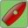
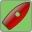
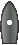
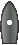
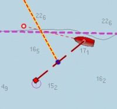

Auto Follow

Clicking the Auto Follow button  will center the chart directly on your vessel's current location. This is a toggle button that looks like this when on, unless the cursor is over the icon. If the the GPS is working the “Own Ship” icon is red
will center the chart directly on your vessel's current location. This is a toggle button that looks like this when on, unless the cursor is over the icon. If the the GPS is working the “Own Ship” icon is red  otherwise the icon is gray. . It's also possible that a yellow own ship icon will appear. Read more: GPS Setup and Status. If zoomed out to a scale that is smaller than 1:300.000 the icon changes to
otherwise the icon is gray. . It's also possible that a yellow own ship icon will appear. Read more: GPS Setup and Status. If zoomed out to a scale that is smaller than 1:300.000 the icon changes to  , when receiving gps signals and otherwise. More about the Own Ship icon is available in Marks and Routes
, when receiving gps signals and otherwise. More about the Own Ship icon is available in Marks and Routes
- The default Own Ship icon can be replaced by putting a file ownship.jpg in the User Icons shared data directory. There is more about this shared directory here: Marks and Routes
- The Auto Follow button is useful for two different situations:
- When you have panned the map away from your current location and want to quickly move back to your vessel.
- When underway, this will keep the display on the chart around your vessel, with the boat at the center of the chart, unless Look Ahead Mode is on.
- Panning the chart will disableAuto Follow mode. Simply click again to turn Auto Follow mode back on. Zooming in/out with the scrollwheel is OK as no panning takes place unless Options→Display→“Zoom-to Cursor” is ticked.
- If the option “Show skewed raster charts as North-up” in the Options→Display→Advanced tab, is not ticked, the right-click toggle option “Course Up Mode/North Up Mode” will be replaced by “Course Up Mode /Chart Up Mode”, for skewed charts.
- If an electronic compass is available in the NMEA stream the own ship icon will be oriented to this heading. The difference can be seen on the chart if there is a cross current, for example. The boat below is heading WNW but is being set SW. An AIS CPA, Closest Point of Approach is also visible.
